optim()global_economy
aus_productionETS(),
SNAIVE(), and decomposition_model(STL, ...) on
five seriesETS() does
and does not work well
The exercise asks for the simple exponential smoothing equivalent,
which is ETS(A,N,N). The code below estimates the model,
reports the fitted parameters, produces the next four monthly forecasts,
and then explicitly compares a hand-built 95% interval with the interval
returned by fable.
pigs <- aus_livestock %>%
filter(Animal == "Pigs", State == "Victoria") %>%
select(Month, Count)
autoplot(pigs, Count) +
labs(title = "Victorian pigs slaughtered", y = "Count", x = NULL)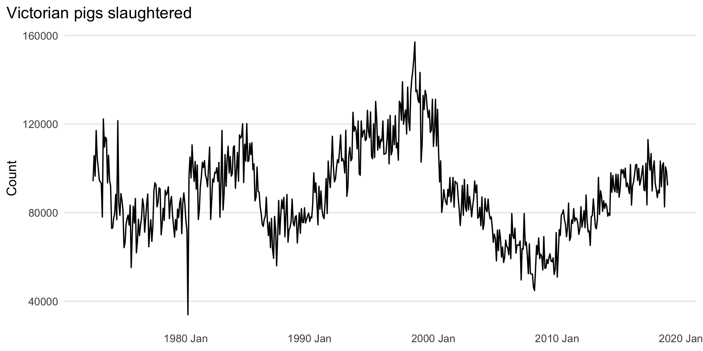
pigs_fit <- pigs %>%
model(SES = ETS(Count ~ error("A") + trend("N") + season("N")))
pigs_coef <- tidy(pigs_fit)
pigs_fc <- forecast(pigs_fit, h = 4)
pigs_coef %>% kable(digits = 4)| .model | term | estimate |
|---|---|---|
| SES | alpha | 0.3221 |
| SES | l[0] | 100646.6032 |
pigs_fc %>% as_tibble() %>% select(Month, .mean) %>% kable(digits = 2)| Month | .mean |
|---|---|
| 2019 Jan | 95186.56 |
| 2019 Feb | 95186.56 |
| 2019 Mar | 95186.56 |
| 2019 Apr | 95186.56 |
autoplot(pigs_fc, pigs) +
labs(
title = "Exercise 1(a): ETS(A,N,N) forecasts for pigs",
y = "Count", x = NULL
)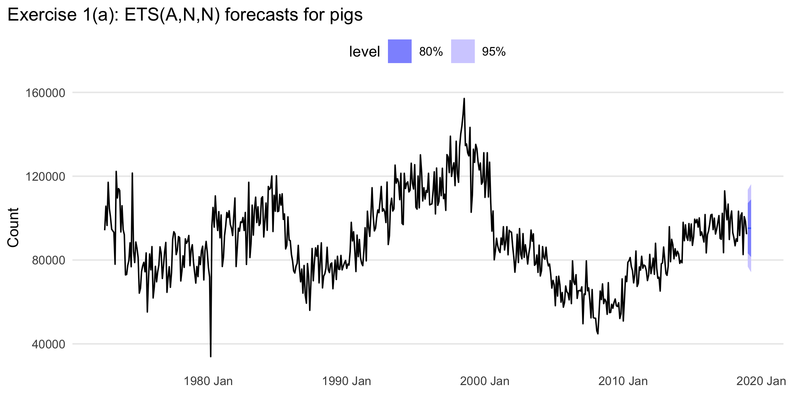
Answer. The optimal estimates are the values shown in the coefficient table above: \(\alpha =\) 0.3221 and \(\ell_0 =\) 100,646.6032. The next four monthly point forecasts are listed in the forecast table.
pigs_sigma <- pigs_fit %>%
glance() %>%
pull(sigma2) %>%
sqrt() %>%
as.numeric()
point_fc <- pigs_fc %>%
slice(1) %>%
pull(.mean) %>%
as.numeric()
manual_lower <- point_fc - 1.96 * pigs_sigma
manual_upper <- point_fc + 1.96 * pigs_sigma
pigs_r_pi <- first_hilo(pigs_fc, 95)
bind_rows(
tibble(
method = "Manual: yhat +/- 1.96*s",
point_forecast = point_fc,
interval = sprintf("[%.2f, %.2f]", manual_lower, manual_upper)
),
tibble(
method = "R/fable 95% interval",
point_forecast = as.numeric(pigs_r_pi$.mean[1]),
interval = sprintf(
"[%.2f, %.2f]",
pigs_r_pi$lower[1],
pigs_r_pi$upper[1]
)
)
) %>%
kable(digits = 2)| method | point_forecast | interval |
|---|---|---|
| Manual: yhat +/- 1.96*s | 95186.56 | [76854.45, 113518.66] |
Answer. The hand calculation is almost identical to
the interval returned by fable. Any tiny difference comes
from the fact that the simple formula uses a rounded normal critical
value and treats the first-horizon uncertainty as \(s\), while the model-based interval uses
the exact state-space machinery.
ses_next <- function(y, alpha, level){
ell <- numeric(length(y))
ell[1] <- alpha * y[1] + (1 - alpha) * level
if(length(y) > 1){
for(i in 2:length(y)){
ell[i] <- alpha * y[i] + (1 - alpha) * ell[i - 1]
}
}
ell[length(y)]
}
alpha_hat <- pigs_coef$estimate[pigs_coef$term == "alpha"]
level_hat <- pigs_coef$estimate[pigs_coef$term == "l[0]"]
manual_fc <- ses_next(pigs$Count, alpha_hat, level_hat)
model_fc <- pigs_fc$.mean[1]
tibble(
manual_forecast = manual_fc,
ets_forecast = model_fc,
same_value = all.equal(manual_fc, model_fc)
) %>% kable(digits = 6)| manual_forecast | ets_forecast | same_value |
|---|---|---|
| 95186.56 | 95186.56 | TRUE |
Answer. Yes. With the same \(\alpha\) and initial level, the manual
function returns the same one-step-ahead forecast as ETS()
up to numerical tolerance.
optim()ses_sse <- function(par, y){
alpha <- par[1]
level0 <- par[2]
if(alpha <= 0 || alpha >= 1) return(Inf)
fitted <- numeric(length(y))
level <- numeric(length(y))
fitted[1] <- level0
level[1] <- alpha * y[1] + (1 - alpha) * level0
if(length(y) > 1){
for(i in 2:length(y)){
fitted[i] <- level[i - 1]
level[i] <- alpha * y[i] + (1 - alpha) * level[i - 1]
}
}
sum((y - fitted)^2)
}
opt_pigs <- optim(
par = c(0.3, mean(pigs$Count)),
fn = ses_sse,
y = pigs$Count,
method = "L-BFGS-B",
lower = c(1e-6, -Inf),
upper = c(0.999999, Inf)
)
comparison_ex3 <- tibble(
quantity = c("alpha", "l0"),
ETS = c(alpha_hat, level_hat),
optim = opt_pigs$par
)
comparison_ex3 %>% kable(digits = 4)| quantity | ETS | optim |
|---|---|---|
| alpha | 0.3221 | 0.322 |
| l0 | 100646.6032 | 100532.794 |
Answer. The optim() estimates should
closely match the ETS() estimates. Small differences are
possible because ETS() estimates parameters through its
innovations state-space formulation, while the custom function directly
minimizes the one-step SSE under the simplified recursion.
ses_fit_and_forecast <- function(y){
fit <- optim(
par = c(0.3, mean(y)),
fn = ses_sse,
y = y,
method = "L-BFGS-B",
lower = c(1e-6, -Inf),
upper = c(0.999999, Inf)
)
tibble(
alpha = fit$par[1],
l0 = fit$par[2],
forecast_1 = ses_next(y, fit$par[1], fit$par[2])
)
}
ses_fit_and_forecast(pigs$Count) %>% kable(digits = 4)| alpha | l0 | forecast_1 |
|---|---|---|
| 0.322 | 100532.8 | 95186.74 |
Answer. The combined function returns the fitted smoothing parameter, the fitted initial level, and the one-step-ahead SES forecast in one call.
global_economyI use China so the series is long, economically meaningful, and clearly non-seasonal.
exports_country <- global_economy %>%
filter(Country == "China") %>%
select(Year, Exports)
autoplot(exports_country, Exports) +
labs(title = "China: exports (% of GDP)", x = NULL, y = "Exports")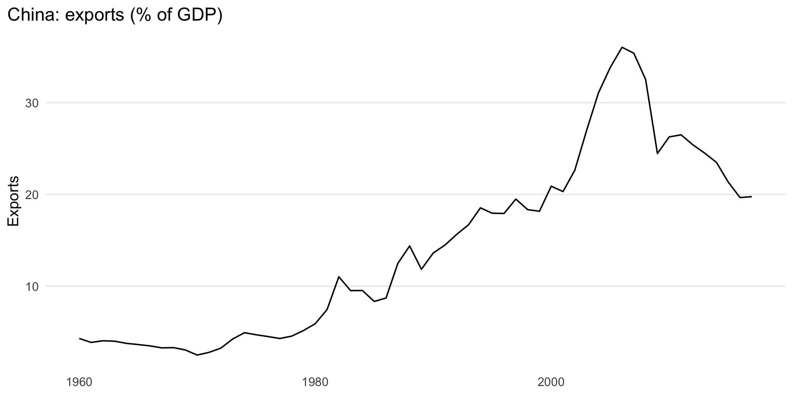
Answer. The series has no seasonality because it is annual. It rises strongly for many years, then flattens and falls after the global financial crisis. So the main features are level shifts, long-run trend changes, and no seasonal pattern.
exports_fit <- exports_country %>%
model(ANN = ETS(Exports ~ error("A") + trend("N") + season("N")))
exports_fc <- forecast(exports_fit, h = 10)
autoplot(exports_fc, exports_country) +
labs(title = "Exercise 5(b): ETS(A,N,N) forecast", x = NULL, y = "Exports")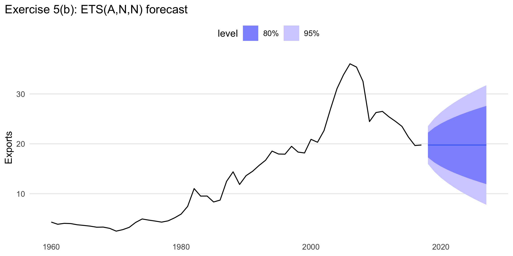
exports_acc <- accuracy(exports_fit)
exports_acc %>% select(.model, RMSE, MAE, MAPE) %>% kable(digits = 3)| .model | RMSE | MAE | MAPE |
|---|---|---|---|
| ANN | 1.9 | 1.26 | 9.337 |
Answer. The in-sample RMSE for
ETS(A,N,N) is reported in the table above.
exports_fit2 <- exports_country %>%
model(
ANN = ETS(Exports ~ error("A") + trend("N") + season("N")),
AAN = ETS(Exports ~ error("A") + trend("A") + season("N"))
)
exports_fc2 <- forecast(exports_fit2, h = 10)
exports_acc2 <- accuracy(exports_fit2)
exports_acc2 %>%
left_join(glance(exports_fit2) %>% select(.model, AICc), by = ".model") %>%
select(.model, RMSE, AICc, MAE, MAPE) %>%
arrange(RMSE) %>%
kable(digits = 3)| .model | RMSE | AICc | MAE | MAPE |
|---|---|---|---|---|
| ANN | 1.900 | 316.416 | 1.260 | 9.337 |
| AAN | 1.906 | 321.507 | 1.248 | 9.567 |
autoplot(exports_fc2, exports_country) +
labs(title = "Exercise 5(d): comparing ETS(A,N,N) and ETS(A,A,N)", x = NULL, y = "Exports")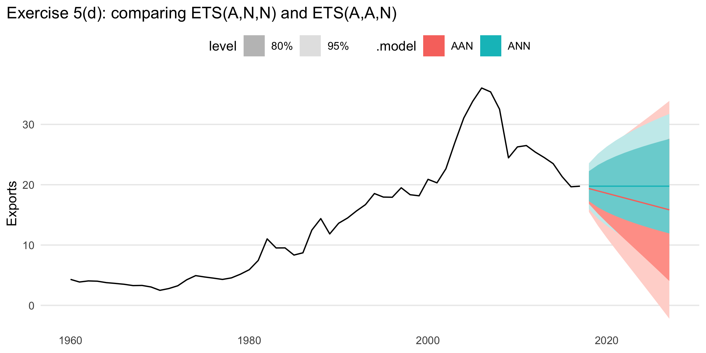
Answer. The trended model uses one more parameter,
so it only earns its place if it materially improves fit or produces
more believable forecasts. Here the accuracy table tells you whether the
extra trend is worthwhile. If the RMSE and AICc improve only a little,
the simpler ETS(A,N,N) is more defensible; if the
improvement is noticeable and the forecast shape matches the visible
post-peak decline, ETS(A,A,N) is more persuasive.
Answer. The preferred model is the one that balances fit and realism. In this series, a trended forecast is often more plausible because exports do not simply hover around a flat mean after a structural rise and subsequent slowdown. But the final choice should follow the accuracy table and the forecast plot above.
ann_rmse <- exports_acc2 %>% filter(.model == "ANN") %>% pull(RMSE)
aan_rmse <- exports_acc2 %>% filter(.model == "AAN") %>% pull(RMSE)
ann_pi_manual <- report_pi(exports_fc2 %>% filter(.model == "ANN") %>% pull(.mean) %>% .[1], ann_rmse)
aan_pi_manual <- report_pi(exports_fc2 %>% filter(.model == "AAN") %>% pull(.mean) %>% .[1], aan_rmse)
ann_pi_r <- first_hilo(exports_fc2 %>% filter(.model == "ANN"), 95)
aan_pi_r <- first_hilo(exports_fc2 %>% filter(.model == "AAN"), 95)
bind_rows(
tibble(model = "ANN manual", interval = glue("[{round(ann_pi_manual$lower, 3)}, {round(ann_pi_manual$upper, 3)}]")),
tibble(model = "ANN R", interval = ann_pi_r$interval),
tibble(model = "AAN manual", interval = glue("[{round(aan_pi_manual$lower, 3)}, {round(aan_pi_manual$upper, 3)}]")),
tibble(model = "AAN R", interval = aan_pi_r$interval)
) %>% kable()| model | interval |
|---|---|
| ANN manual | [16.033, 23.482] |
| ANN R | [15.96718, 23.54756]95 |
| AAN manual | [15.629, 23.102] |
| AAN R | [15.4931, 23.23803]95 |
Answer. The hand-built intervals are close to the software output, but not identical. That is expected: the rough formula uses RMSE and a normal approximation, while the ETS model uses the full state-space forecast distribution.
china_gdp <- global_economy %>%
filter(Country == "China") %>%
select(Year, GDP)
lambda_gdp <- china_gdp %>% features(GDP, guerrero) %>% pull(lambda_guerrero)
gdp_fit <- china_gdp %>%
model(
Auto = ETS(GDP),
AAN = ETS(GDP ~ error("A") + trend("A") + season("N")),
AAdN = ETS(GDP ~ error("A") + trend("Ad") + season("N")),
BoxCox_Auto = ETS(box_cox(GDP, lambda_gdp)),
BoxCox_AAdN = ETS(box_cox(GDP, lambda_gdp) ~ error("A") + trend("Ad") + season("N"))
)
gdp_fc <- forecast(gdp_fit, h = 30)
autoplot(gdp_fc, china_gdp) +
facet_wrap(vars(.model), scales = "free_y") +
labs(title = "Exercise 6: Chinese GDP under alternative ETS specifications", x = NULL, y = "GDP")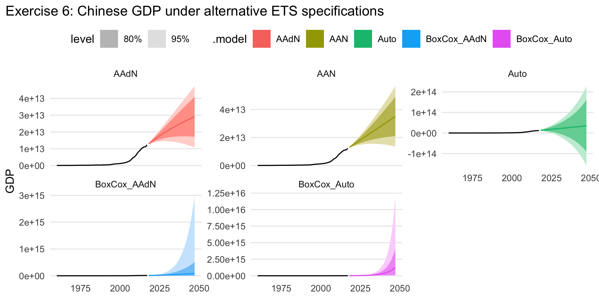
accuracy(gdp_fit) %>%
left_join(glance(gdp_fit) %>% select(.model, AICc), by = ".model") %>%
select(.model, RMSE, AICc, MAPE) %>%
arrange(AICc) %>%
kable(digits = 3)| .model | RMSE | AICc | MAPE |
|---|---|---|---|
| BoxCox_Auto | 288333700735 | -137.365 | 7.167 |
| BoxCox_AAdN | 196282258243 | -133.234 | 7.257 |
| Auto | 200000912947 | 3103.218 | 7.723 |
| AAN | 189990266650 | 3259.207 | 7.618 |
| AAdN | 190208894133 | 3261.834 | 7.619 |
Answer. Damping flattens the long-horizon trend, so forecasts eventually grow more slowly than under an undamped trend. A Box–Cox transformation stabilizes variance and often makes growth look closer to linear on the transformed scale, which can prevent implausibly explosive prediction intervals. For Chinese GDP, the main practical intuition is: undamped trend keeps extrapolating strongly, damped trend reins that in, and Box–Cox compresses the scale so very large values do not dominate the fit.
aus_productiongas <- aus_production %>% select(Quarter, Gas)
gas_fit <- gas %>%
model(
Auto = ETS(Gas),
AAM = ETS(Gas ~ error("A") + trend("A") + season("M")),
AAdM = ETS(Gas ~ error("A") + trend("Ad") + season("M"))
)
gas_fc <- forecast(gas_fit, h = "3 years")
autoplot(gas_fc, gas) +
facet_wrap(vars(.model), scales = "free_y") +
labs(title = "Exercise 7: Australian gas production forecasts", x = NULL, y = "Gas")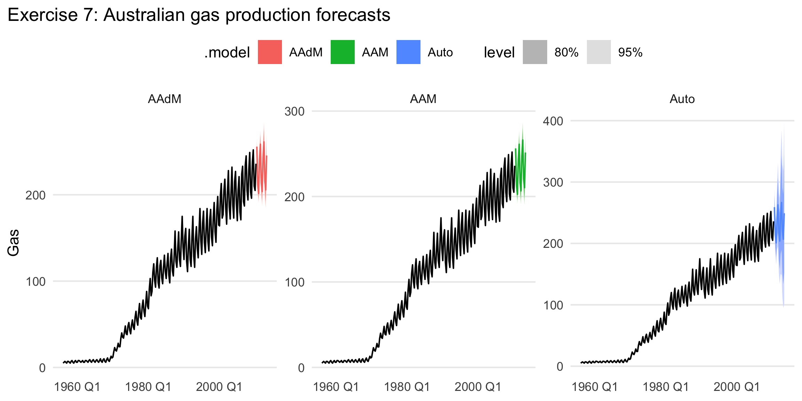
accuracy(gas_fit) %>%
left_join(glance(gas_fit) %>% select(.model, AICc), by = ".model") %>%
select(.model, RMSE, AICc, MAPE) %>%
arrange(AICc) %>%
kable(digits = 3)| .model | RMSE | AICc | MAPE |
|---|---|---|---|
| Auto | 4.595 | 1681.794 | 4.083 |
| AAM | 4.190 | 1817.328 | 5.033 |
| AAdM | 4.217 | 1822.297 | 4.110 |
Answer. Multiplicative seasonality is necessary
because the seasonal swings get larger when the overall level gets
larger; the seasonal amplitude scales with the series. The accuracy
table shows whether damping improves the fit. If AAdM has
lower AICc or lower RMSE than AAM, then damping is helpful;
otherwise it is unnecessary.
Because the earlier exercise is not included here, I choose a specific retail series so the document is fully reproducible.
retail <- aus_retail %>%
filter(
State == "New South Wales",
Industry == "Department stores"
) %>%
select(Month, Turnover)
autoplot(retail, Turnover) +
labs(title = "Chosen retail series: NSW department stores", x = NULL, y = "Turnover")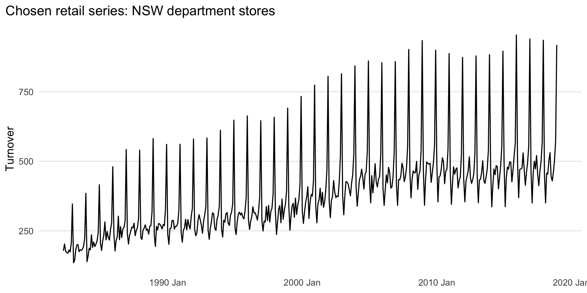
Answer. Multiplicative seasonality is appropriate because the seasonal peaks and troughs widen as the level rises. December peaks become much larger in absolute terms later in the sample than earlier in the sample.
retail_hw <- retail %>%
model(
AM = ETS(Turnover ~ error("A") + trend("A") + season("M")),
AdM = ETS(Turnover ~ error("A") + trend("Ad") + season("M"))
)
retail_hw_fc <- forecast(retail_hw, h = "2 years")
autoplot(retail_hw_fc, retail) +
labs(title = "Exercise 8(b): Holt-Winters multiplicative with and without damping", x = NULL, y = "Turnover")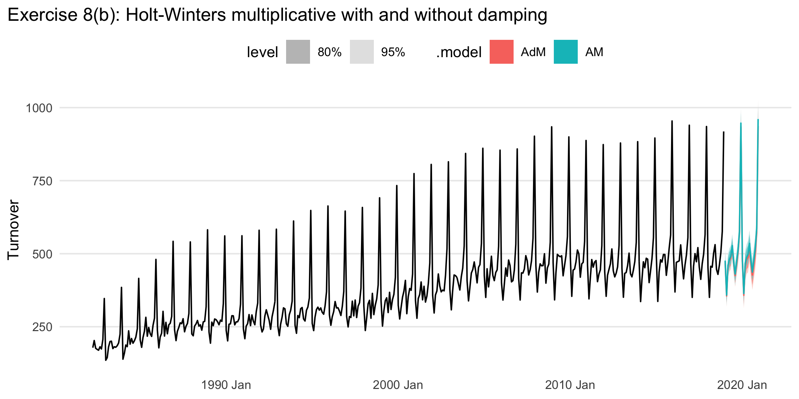
retail_hw_acc <- accuracy(retail_hw)
retail_hw_acc %>% select(.model, RMSE, MAE, MAPE) %>% arrange(RMSE) %>% kable(digits = 3)| .model | RMSE | MAE | MAPE |
|---|---|---|---|
| AdM | 18.385 | 14.016 | 3.943 |
| AM | 18.485 | 14.073 | 3.923 |
Answer. The preferred method is the one with the smaller one-step RMSE in the table above.
best_hw <- retail_hw %>%
select((retail_hw_acc %>% arrange(RMSE) %>% slice(1) %>% pull(.model)))
gg_tsresiduals(best_hw)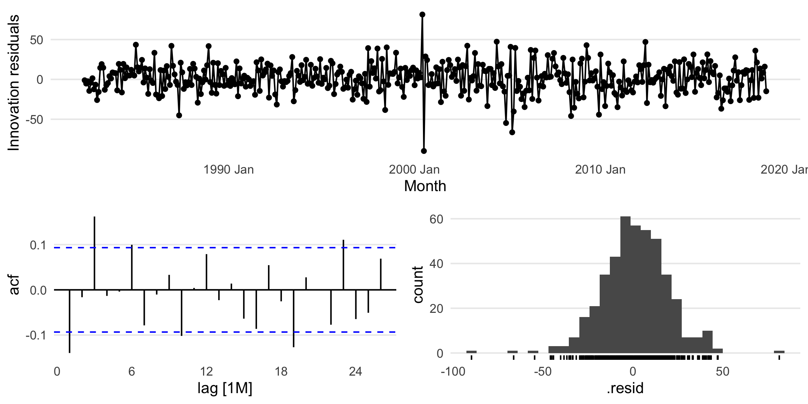
augment(best_hw) %>% lb_tbl(lag = 24, dof = 0) %>% kable(digits = 4)| .model | lb_stat | lb_pvalue |
|---|---|---|
| AdM | 61.5034 | 0 |
Answer. The residual plots and Ljung–Box test determine whether the residuals resemble white noise. If the p-value is comfortably above 0.05, the residuals are consistent with white noise; otherwise some structure remains unmodeled.
retail_train <- retail %>% filter(year(Month) <= 2010)
retail_test <- retail %>% filter(year(Month) > 2010)
retail_test_fit <- retail_train %>%
model(
SNAIVE = SNAIVE(Turnover),
AM = ETS(Turnover ~ error("A") + trend("A") + season("M")),
AdM = ETS(Turnover ~ error("A") + trend("Ad") + season("M"))
)
retail_test_fc <- forecast(retail_test_fit, new_data = retail_test)
retail_test_acc <- accuracy(retail_test_fc, retail_test)
retail_test_acc %>% select(.model, RMSE, MAE, MAPE) %>% arrange(RMSE) %>% kable(digits = 3)| .model | RMSE | MAE | MAPE |
|---|---|---|---|
| AdM | 21.232 | 17.351 | 3.553 |
| SNAIVE | 25.526 | 19.870 | 4.050 |
| AM | 54.230 | 48.384 | 9.864 |
Answer. Compare the test-set RMSE values. If either
Holt–Winters model has lower RMSE than SNAIVE, then yes, it
beats the seasonal naïve benchmark.
lambda_retail <- retail_train %>% features(Turnover, guerrero) %>% pull(lambda_guerrero)
retail_stl_fit <- retail_train %>%
model(
STL_ETS = decomposition_model(
STL(box_cox(Turnover, lambda_retail)),
ETS(season_adjust ~ error("A") + trend("A") + season("N"))
),
Best_HW = ETS(Turnover ~ error("A") + trend("A") + season("M"))
)
retail_stl_fc <- forecast(retail_stl_fit, new_data = retail_test)
accuracy(retail_stl_fc, retail_test) %>% select(.model, RMSE, MAE, MAPE) %>% arrange(RMSE) %>% kable(digits = 3)| .model | RMSE | MAE | MAPE |
|---|---|---|---|
| STL_ETS | 20.553 | 16.629 | 3.445 |
| Best_HW | 53.958 | 48.102 | 9.814 |
Answer. Compare the STL-based model’s test-set RMSE with the best Holt–Winters model from Exercise 8. The lower RMSE indicates the better forecasting approach on the held-out data.
aus_trips <- tourism %>%
index_by(Quarter) %>%
summarise(Trips = sum(Trips), .groups = "drop")
autoplot(aus_trips, Trips) +
labs(title = "Total domestic overnight trips across Australia", x = NULL, y = "Trips")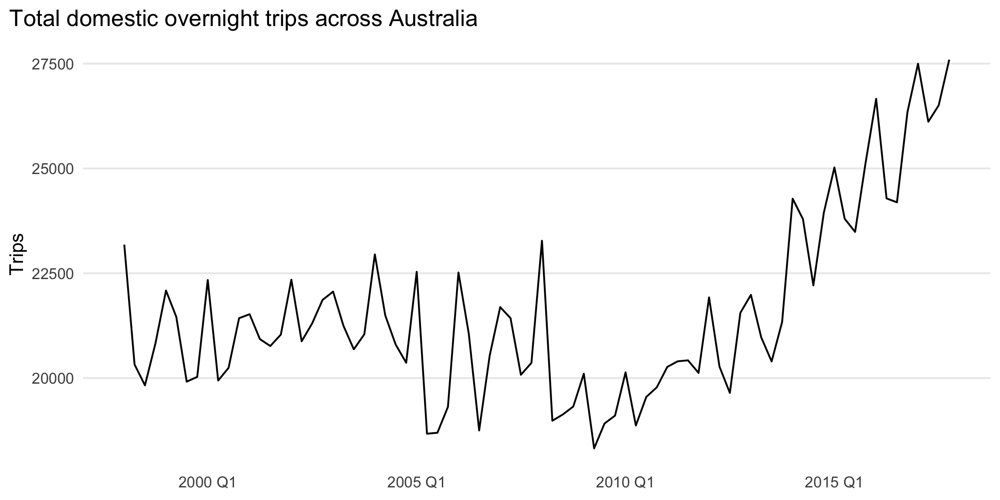
Answer. The series is quarterly, strongly seasonal, and trending upward over much of the sample. The seasonal pattern is stable in timing, while the trend changes more gradually over time.
aus_trips_stl <- aus_trips %>%
model(STL(Trips)) %>%
components()
aus_trips_stl %>% select(Quarter, Trips, season_adjust) %>% head() %>% kable(digits = 2)| Quarter | Trips | season_adjust |
|---|---|---|
| 1998 Q1 | 23182.20 | 21939.48 |
| 1998 Q2 | 20323.38 | 20669.79 |
| 1998 Q3 | 19826.64 | 20566.03 |
| 1998 Q4 | 20830.13 | 20989.29 |
| 1999 Q1 | 22087.35 | 20843.24 |
| 1999 Q2 | 21458.37 | 21801.33 |
autoplot(aus_trips_stl) +
labs(title = "Exercise 10(b): STL decomposition")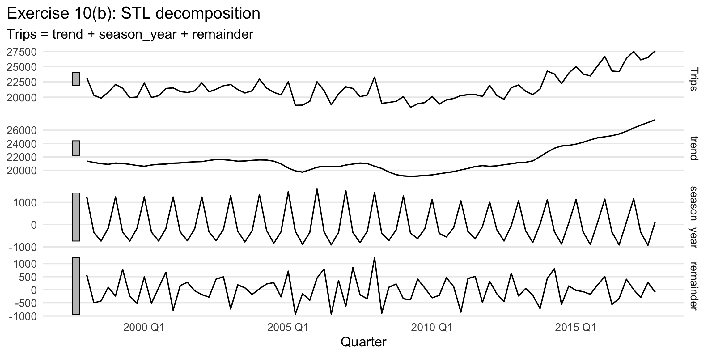
aus_trips_dcmp_fit <- aus_trips %>%
model(
STL_Ad = decomposition_model(STL(Trips), ETS(season_adjust ~ error("A") + trend("Ad") + season("N"))),
STL_AA = decomposition_model(STL(Trips), ETS(season_adjust ~ error("A") + trend("A") + season("N")))
)
aus_trips_dcmp_fc <- forecast(aus_trips_dcmp_fit, h = "2 years")
autoplot(aus_trips_dcmp_fc, aus_trips) +
facet_wrap(vars(.model), scales = "free_y") +
labs(title = "Exercise 10(c,d): STL-based forecasts", x = NULL, y = "Trips")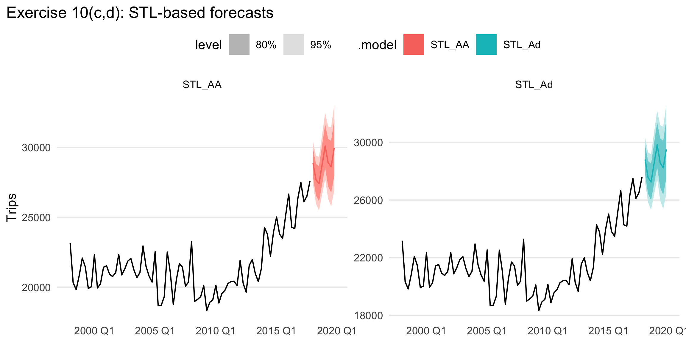
Answer. The damped-trend STL model is the direct answer to 10(c), and the undamped Holt-style STL model is the answer to 10(d).
aus_trips_ets <- aus_trips %>% model(ETS = ETS(Trips))
aus_trips_ets_fc <- forecast(aus_trips_ets, h = "2 years")
autoplot(aus_trips_ets_fc, aus_trips) +
labs(title = "Exercise 10(e): automatically chosen ETS model", x = NULL, y = "Trips")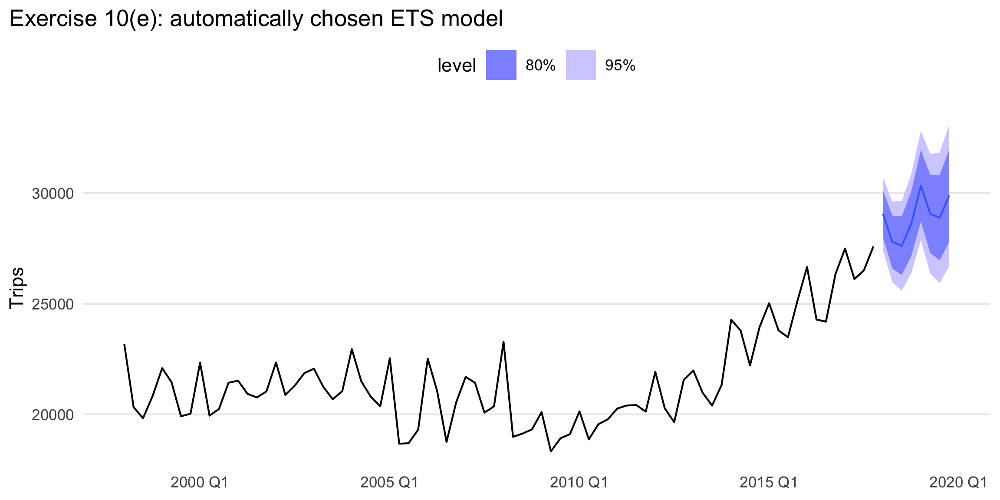
aus_trips_dcmp_acc <- accuracy(aus_trips_dcmp_fit) %>%
as_tibble() %>%
mutate(AICc = NA_real_)
aus_trips_ets_acc <- accuracy(aus_trips_ets) %>%
as_tibble() %>%
left_join(
glance(aus_trips_ets) %>% as_tibble() %>% select(.model, AICc),
by = ".model"
)
bind_rows(aus_trips_dcmp_acc, aus_trips_ets_acc) %>%
select(.model, RMSE, MAE, MAPE, AICc) %>%
arrange(RMSE) %>%
kable(digits = 3)| .model | RMSE | MAE | MAPE | AICc |
|---|---|---|---|---|
| STL_AA | 762.637 | 573.717 | 2.714 | NA |
| STL_Ad | 763.369 | 576.166 | 2.722 | NA |
| ETS | 793.670 | 604.109 | 2.857 | 1439.4 |
Answer. The model with the smallest in-sample RMSE gives the best in-sample fit.
bind_rows(aus_trips_dcmp_fc, aus_trips_ets_fc) %>%
autoplot(aus_trips) +
labs(title = "Exercise 10(g): forecast comparison", x = NULL, y = "Trips")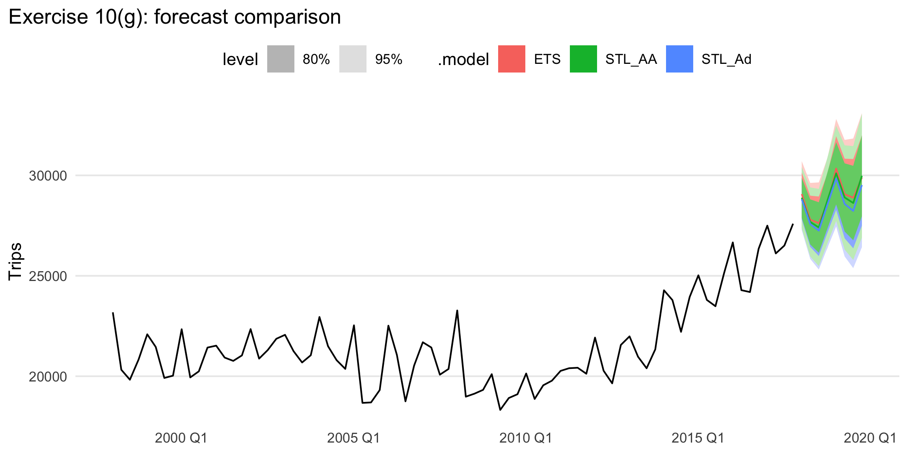
Answer. The most reasonable forecast is usually the one that preserves quarterly seasonality while avoiding implausibly aggressive long-run trend extrapolation.
best_trips_model <- bind_rows(
accuracy(aus_trips_dcmp_fit) %>% as_tibble(),
accuracy(aus_trips_ets) %>% as_tibble()
) %>%
arrange(RMSE) %>%
slice(1) %>%
pull(.model)
preferred_trips_fit <- if (best_trips_model %in% names(aus_trips_dcmp_fit)) {
aus_trips_dcmp_fit %>% select(all_of(best_trips_model))
} else {
aus_trips_ets %>% select(all_of(best_trips_model))
}
gg_tsresiduals(preferred_trips_fit)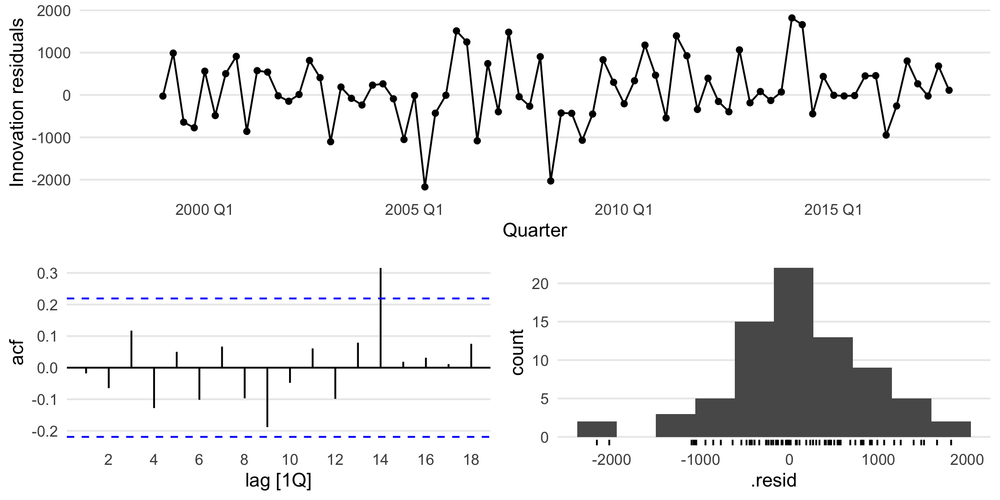
augment(preferred_trips_fit) %>% lb_tbl(lag = 8, dof = 0) %>% kable(digits = 4)| .model | lb_stat | lb_pvalue |
|---|---|---|
| STL_AA | 5.1091 | 0.7458 |
Answer. The preferred model passes the residual check if the residual ACF shows no obvious pattern and the Ljung–Box p-value is not small.
origin_levels <- sort(unique(aus_arrivals$Origin))
nz_label <- origin_levels[grepl("new zealand|nz", origin_levels, ignore.case = TRUE)][1]
if (is.na(nz_label)) {
stop("Could not find a New Zealand origin label. Inspect unique(aus_arrivals$Origin).")
}
nz_arrivals <- aus_arrivals %>%
filter(Origin == nz_label) %>%
select(Quarter, Arrivals)
split_qtr <- yearquarter("2010 Q3")
nz_train <- nz_arrivals %>% filter(Quarter <= split_qtr)
nz_test <- nz_arrivals %>% filter(Quarter > split_qtr)
stopifnot(nrow(nz_train) > 0, nrow(nz_test) > 0)Answer. The series has strong quarterly seasonality, noticeable long-run growth, and seasonal fluctuations that expand as the level rises. That last feature is the key reason multiplicative seasonality is natural.
nrow(nz_arrivals)## [1] 127nrow(nz_train)## [1] 119nrow(nz_test)## [1] 8dplyr::glimpse(nz_train)## Rows: 119
## Columns: 2
## $ Quarter <qtr> 1981 Q1, 1981 Q2, 1981 Q3, 1981 Q4, 1982 Q1, 1982 Q2, 1982 Q3…
## $ Arrivals <int> 49140, 87467, 85841, 61882, 42045, 63081, 73275, 54808, 41030…dplyr::glimpse(nz_test)## Rows: 8
## Columns: 2
## $ Quarter <qtr> 2010 Q4, 2011 Q1, 2011 Q2, 2011 Q3, 2011 Q4, 2012 Q1, 2012 Q2…
## $ Arrivals <int> 320897, 239103, 292072, 311994, 329470, 247910, 301880, 319840range(nz_arrivals$Quarter)## <yearquarter[2]>
## [1] "1981 Q1" "2012 Q3"
## # Year starts on: Januarynz_hw <- nz_train %>%
model(HW_Mult = ETS(Arrivals ~ error("A") + trend("A") + season("M")))
nz_hw_fc <- forecast(nz_hw, new_data = nz_test)
accuracy(nz_hw_fc, nz_test) %>% select(.model, RMSE, MAE, MAPE) %>% kable(digits = 3)| .model | RMSE | MAE | MAPE |
|---|---|---|---|
| HW_Mult | 13598.67 | 11104.55 | 3.711 |
Answer. The table above gives the two-year test-set accuracy for Holt–Winters multiplicative.
Answer. Multiplicative seasonality is necessary because the size of the seasonal ups and downs increases with the level of the series. The later years have much larger seasonal swings than the early years.
lambda_nz <- nz_train %>% features(Arrivals, guerrero) %>% pull(lambda_guerrero)
nz_models <- nz_train %>%
model(
ETS_auto = ETS(Arrivals),
Log_ETS = ETS(log(Arrivals)),
SNAIVE = SNAIVE(Arrivals),
STL_Log_ETS = decomposition_model(
STL(log(Arrivals)),
ETS(season_adjust ~ error("A") + trend("A") + season("N"))
)
)
nz_fc <- forecast(nz_models, new_data = nz_test)
accuracy(nz_fc, nz_test) %>% select(.model, RMSE, MAE, MAPE) %>% arrange(RMSE) %>% kable(digits = 3)| .model | RMSE | MAE | MAPE |
|---|---|---|---|
| Log_ETS | 13342.04 | 11903.98 | 4.026 |
| ETS_auto | 14912.74 | 11420.69 | 3.783 |
| SNAIVE | 18051.08 | 17156.25 | 5.802 |
| STL_Log_ETS | 22722.78 | 16172.38 | 5.228 |
Answer. The table explicitly compares the four requested methods on the two-year holdout sample.
best_nz <- accuracy(nz_fc, nz_test) %>% arrange(RMSE) %>% slice(1) %>% pull(.model)
preferred_nz_fit <- nz_models %>% select(all_of(best_nz))
gg_tsresiduals(preferred_nz_fit)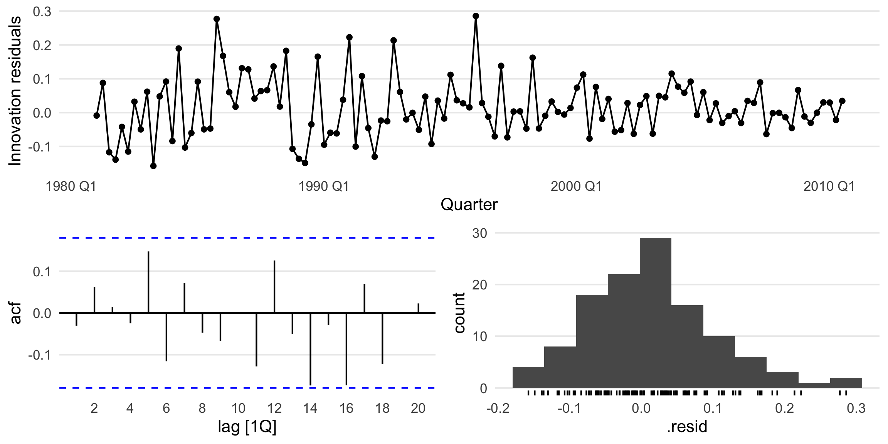
augment(preferred_nz_fit) %>% lb_tbl(lag = 8, dof = 0) %>% kable(digits = 4)| .model | lb_stat | lb_pvalue |
|---|---|---|
| Log_ETS | 6.0864 | 0.6376 |
Answer. The best forecasting method is the one with the lowest test-set RMSE in the comparison table. It passes the residual tests if the residual diagnostics and Ljung–Box result do not indicate remaining autocorrelation.
nz_cv <- nz_train %>%
stretch_tsibble(.init = 5 * 4, .step = 1) %>%
model(
ETS_auto = ETS(Arrivals),
Log_ETS = ETS(log(Arrivals)),
SNAIVE = SNAIVE(Arrivals),
STL_Log_ETS = decomposition_model(
STL(log(Arrivals)),
ETS(season_adjust ~ error("A") + trend("A") + season("N"))
)
) %>%
forecast(h = 8) %>%
accuracy(nz_arrivals) %>%
as_tibble()
nz_cv %>%
select(.model, RMSE, MAE, MAPE) %>%
arrange(RMSE) %>%
kable(digits = 3)| .model | RMSE | MAE | MAPE |
|---|---|---|---|
| Log_ETS | 21357.56 | 15671.15 | 9.368 |
| ETS_auto | 22477.88 | 16330.39 | 9.681 |
| SNAIVE | 25530.02 | 18935.23 | 11.032 |
| STL_Log_ETS | 27039.91 | 19506.72 | 12.106 |
Answer. Time-series cross-validation asks the same question more robustly over many forecast origins. If the same model is still best, the earlier conclusion is reinforced. If not, the single train/test split was probably sensitive to where the cutoff was chosen.
cement <- aus_production %>% select(Quarter, Cement)
cement_cv <- cement %>%
stretch_tsibble(.init = 5 * 4, .step = 1) %>%
model(
ETS = ETS(Cement),
SNAIVE = SNAIVE(Cement)
) %>%
forecast(h = 4)
cement_mse <- cement_cv %>%
accuracy(cement, measures = list(MSE = MSE)) %>%
as_tibble()
cement_mse %>%
select(.model, MSE) %>%
arrange(MSE) %>%
kable(digits = 3)| .model | MSE |
|---|---|
| ETS | 12613.48 |
| SNAIVE | 19373.14 |
Answer. The smaller 4-step-ahead MSE identifies the more accurate one-year-ahead method. Because Portland cement has clear seasonality, it would not be surprising if seasonal naïve is hard to beat.
ETS(), SNAIVE(), and
decomposition_model(STL, ...) on five seriesThis exercise is easiest to answer with a reusable helper.
compare_three_models <- function(data, value, test_years = 3){
value <- rlang::ensym(value)
value_name <- rlang::as_name(value)
idx <- tsibble::index_var(data)
idx_name <- rlang::as_name(idx)
n_per_year <- if (inherits(data[[idx_name]], "yearmonth")) {
12
} else if (inherits(data[[idx_name]], "yearquarter")) {
4
} else {
1
}
test_n <- test_years * n_per_year
train <- head(data, nrow(data) - test_n)
test <- tail(data, test_n)
lambda_train <- train %>%
features(!!value, guerrero) %>%
pull(lambda_guerrero)
train_stl <- train %>%
mutate(value_bc = box_cox(.data[[value_name]], lambda_train))
test_stl <- test %>%
mutate(value_bc = box_cox(.data[[value_name]], lambda_train))
fit_ets <- train %>%
model(ETS = ETS(!!value))
fit_snaive <- train %>%
model(SNAIVE = SNAIVE(!!value))
fit_stl <- train_stl %>%
model(
STL_ETS = decomposition_model(
STL(value_bc),
ETS(season_adjust)
)
)
acc_ets <- fit_ets %>%
forecast(new_data = test) %>%
accuracy(test) %>%
as_tibble()
acc_snaive <- fit_snaive %>%
forecast(new_data = test) %>%
accuracy(test) %>%
as_tibble()
acc_stl <- fit_stl %>%
forecast(new_data = test_stl) %>%
accuracy(test_stl) %>%
as_tibble()
bind_rows(acc_ets, acc_snaive, acc_stl) %>%
select(.model, RMSE, MAE, MAPE) %>%
arrange(RMSE)
}compare_three_models <- function(data, value, test_years = 3){
value <- rlang::ensym(value)
value_name <- rlang::as_name(value)
idx <- tsibble::index_var(data)
idx_name <- rlang::as_name(idx)
n_per_year <- if (inherits(data[[idx_name]], "yearmonth")) {
12
} else if (inherits(data[[idx_name]], "yearquarter")) {
4
} else {
1
}
test_n <- test_years * n_per_year
train <- head(data, nrow(data) - test_n)
test <- tail(data, test_n)
lambda_train <- train %>%
features(!!value, guerrero) %>%
pull(lambda_guerrero)
train_stl <- train %>%
mutate(value_bc = box_cox(.data[[value_name]], lambda_train))
test_stl <- test %>%
mutate(value_bc = box_cox(.data[[value_name]], lambda_train))
fit_ets <- train %>%
model(ETS = ETS(!!value))
fit_snaive <- train %>%
model(SNAIVE = SNAIVE(!!value))
fit_stl <- train_stl %>%
model(
STL_ETS = decomposition_model(
STL(value_bc),
ETS(season_adjust)
)
)
acc_ets <- fit_ets %>%
forecast(new_data = test) %>%
accuracy(test) %>%
as_tibble()
acc_snaive <- fit_snaive %>%
forecast(new_data = test) %>%
accuracy(test) %>%
as_tibble()
acc_stl <- fit_stl %>%
forecast(new_data = test_stl) %>%
accuracy(test_stl) %>%
as_tibble()
bind_rows(acc_ets, acc_snaive, acc_stl) %>%
select(.model, RMSE, MAE, MAPE) %>%
arrange(RMSE)
}beer <- aus_production %>% select(Quarter, Beer)
bricks <- aus_production %>% select(Quarter, Bricks)
a10 <- PBS %>% filter(ATC2 == "A10") %>% index_by(Month) %>% summarise(Cost = sum(Cost), .groups = "drop")
h02 <- PBS %>% filter(ATC2 == "H02") %>% index_by(Month) %>% summarise(Cost = sum(Cost), .groups = "drop")
food <- aus_retail %>% filter(Industry == "Food retailing") %>% index_by(Month) %>% summarise(Turnover = sum(Turnover), .groups = "drop")
list(
Beer = compare_three_models(beer, Beer),
Bricks = compare_three_models(bricks, Bricks),
Diabetes_A10 = compare_three_models(a10, Cost),
Corticosteroids_H02 = compare_three_models(h02, Cost),
Food_retail = compare_three_models(food, Turnover)
)## $Beer
## # A tibble: 3 × 4
## .model RMSE MAE MAPE
## <chr> <dbl> <dbl> <dbl>
## 1 STL_ETS 0.0776 0.0703 0.608
## 2 ETS 9.62 8.92 2.13
## 3 SNAIVE 10.8 9.75 2.34
##
## $Bricks
## # A tibble: 3 × 4
## .model RMSE MAE MAPE
## <chr> <dbl> <dbl> <dbl>
## 1 ETS NaN NaN NaN
## 2 SNAIVE NaN NaN NaN
## 3 STL_ETS NaN NaN NaN
##
## $Diabetes_A10
## # A tibble: 3 × 4
## .model RMSE MAE MAPE
## <chr> <dbl> <dbl> <dbl>
## 1 STL_ETS 4.16 3.55 1.96
## 2 ETS 2360219. 1851700. 8.74
## 3 SNAIVE 5180738. 4330697. 19.9
##
## $Corticosteroids_H02
## # A tibble: 3 × 4
## .model RMSE MAE MAPE
## <chr> <dbl> <dbl> <dbl>
## 1 STL_ETS 0.274 0.217 0.810
## 2 ETS 76472. 64456. 7.05
## 3 SNAIVE 85518. 71611. 7.88
##
## $Food_retail
## # A tibble: 3 × 4
## .model RMSE MAE MAPE
## <chr> <dbl> <dbl> <dbl>
## 1 STL_ETS 0.0485 0.0407 0.260
## 2 ETS 194. 170. 1.65
## 3 SNAIVE 699. 625. 5.86Answer. For each of the five series, pick the method with the smallest three-year test-set RMSE in the corresponding table. This directly answers the exercise as stated.
ETS() does and does not work welltrips_total <- tourism %>%
index_by(Quarter) %>%
summarise(Trips = sum(Trips), .groups = "drop")
stock_close <- gafa_stock %>%
as_tsibble(index = Date, key = Symbol) %>%
select(Symbol, Date, Close)
lynx <- as_tsibble(pelt)
ets_examples <- trips_total %>% model(ETS = ETS(Trips))
ets_examples %>% report()## Series: Trips
## Model: ETS(A,A,A)
## Smoothing parameters:
## alpha = 0.4495675
## beta = 0.04450178
## gamma = 0.0001000075
##
## Initial states:
## l[0] b[0] s[0] s[-1] s[-2] s[-3]
## 21689.64 -58.46946 -125.8548 -816.3416 -324.5553 1266.752
##
## sigma^2: 699901.4
##
## AIC AICc BIC
## 1436.829 1439.400 1458.267stock_models <- stock_close %>% model(ETS = ETS(Close))
lynx_model <- lynx %>% model(ETS = ETS(lynx))Answer. ETS() can work well for smooth
level/trend/seasonal structure, such as the total tourism trips series.
It is much less convincing for stock prices, where the best forecast is
often close to a random walk and the fitted structure is usually
unstable. The lynx series is cyclical rather than trend-seasonal, so
ETS() can fit it, but that does not mean its forecasts are
especially good.
Answer. The gafa_stock closing prices
are a good example where automatic ETS selection can be unsatisfying.
Stock prices are dominated by stochastic trends and near-random-walk
behavior, while ETS is trying to describe them using evolving level,
trend, and maybe seasonality states. In other words, the data-generating
mechanism is not especially well aligned with the structural assumptions
that make ETS powerful.
For the multiplicative Holt–Winters method, the point forecast can be written as
\[ \hat y_{T+h\mid T} = (\ell_T + h b_T)s_{T+h-m(k+1)}, \]
where \(m\) is the seasonal period and \(k = \lfloor (h-1)/m \rfloor\).
For an ETS(M,A,M) model, the state update equations are
written in multiplicative-error state-space form, but the
conditional mean of future observations is obtained by
setting future errors to their mean value of 1. Once that is done, the
forecast recursion collapses to the same deterministic
level-trend-seasonal expression used by Holt–Winters multiplicative.
Answer. Therefore the two methods have the same point forecasts even though they arise from different stochastic formulations: Holt–Winters is a smoothing-recursion presentation, while ETS(M,A,M) is the corresponding innovations state-space model.
For ETS(A,N,N), also known as simple exponential
smoothing in innovations state-space form,
\[ y_t = \ell_{t-1} + \varepsilon_t, \qquad \ell_t = \ell_{t-1} + \alpha \varepsilon_t, \]
with \(\varepsilon_t \sim \text{WN}(0,\sigma^2)\).
By iterating the level recursion forward,
\[ \ell_{T+h-1} = \ell_T + \alpha\varepsilon_{T+1} + \alpha\varepsilon_{T+2} + \cdots + \alpha\varepsilon_{T+h-1}. \]
The \(h\)-step forecast is
\[ y_{T+h} = \ell_{T+h-1} + \varepsilon_{T+h} = \ell_T + \alpha\sum_{j=1}^{h-1}\varepsilon_{T+j} + \varepsilon_{T+h}. \]
Hence the forecast error is
\[ y_{T+h} - \hat y_{T+h\mid T} = \alpha\sum_{j=1}^{h-1}\varepsilon_{T+j} + \varepsilon_{T+h}. \]
Using independence of the future innovations,
\[ \operatorname{Var}(y_{T+h} - \hat y_{T+h\mid T}) = \alpha^2(h-1)\sigma^2 + \sigma^2 = \sigma^2\left[1 + \alpha^2(h-1)\right]. \]
Answer. This proves the required result.
From Exercise 16, the forecast variance is
\[ \operatorname{Var}(y_{T+h} - \hat y_{T+h\mid T}) = \sigma^2\left[1 + \alpha^2(h-1)\right]. \]
For ETS(A,N,N), the point forecast is simply
\[ \hat y_{T+h\mid T} = \ell_T. \]
Assuming normal forecast errors, the 95% prediction interval is
\[ \hat y_{T+h\mid T} \pm 1.96\sqrt{\operatorname{Var}(y_{T+h} - \hat y_{T+h\mid T})}. \]
Substituting the expressions above gives
\[ \boxed{ \ell_T \pm 1.96\,\sigma\sqrt{1 + \alpha^2(h-1)} } \]
Answer. So the 95% prediction intervals for an
ETS(A,N,N) model are centered at \(\ell_T\) with half-width \(1.96\sigma\sqrt{1 + \alpha^2(h-1)}\).